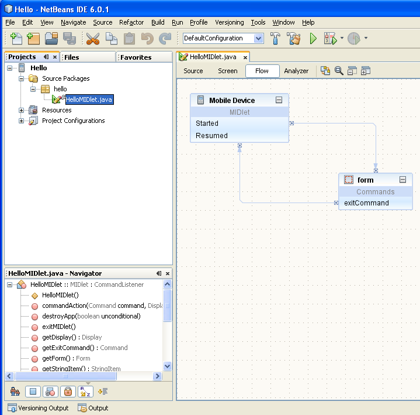
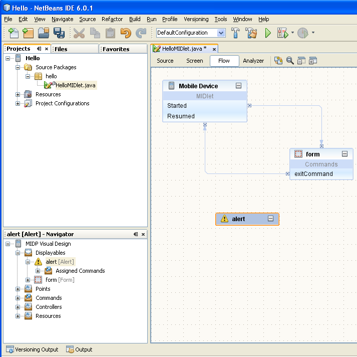
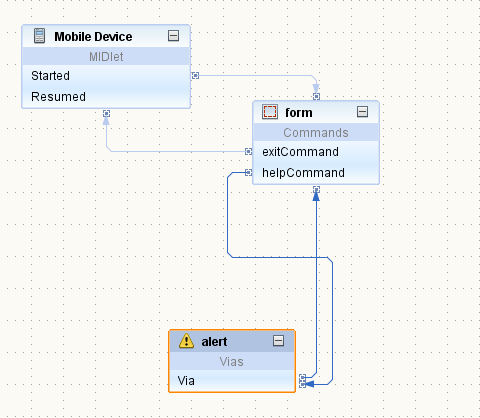
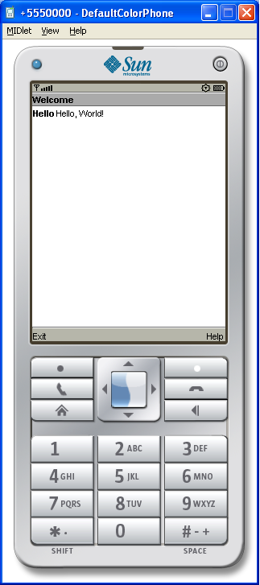
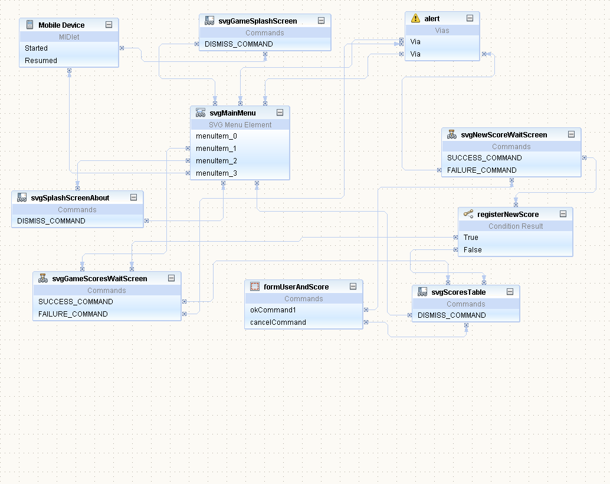
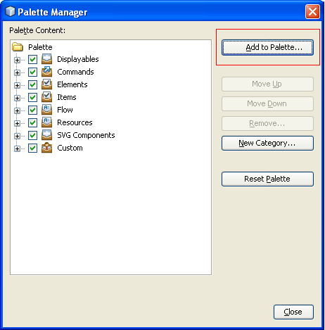
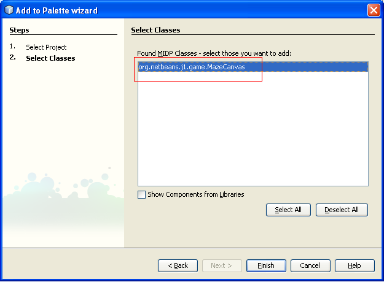
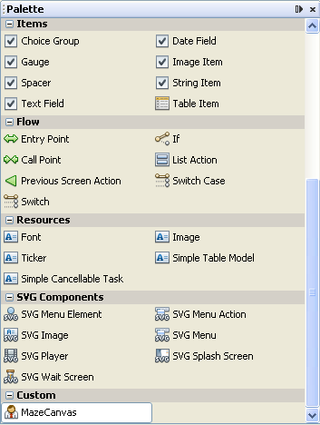
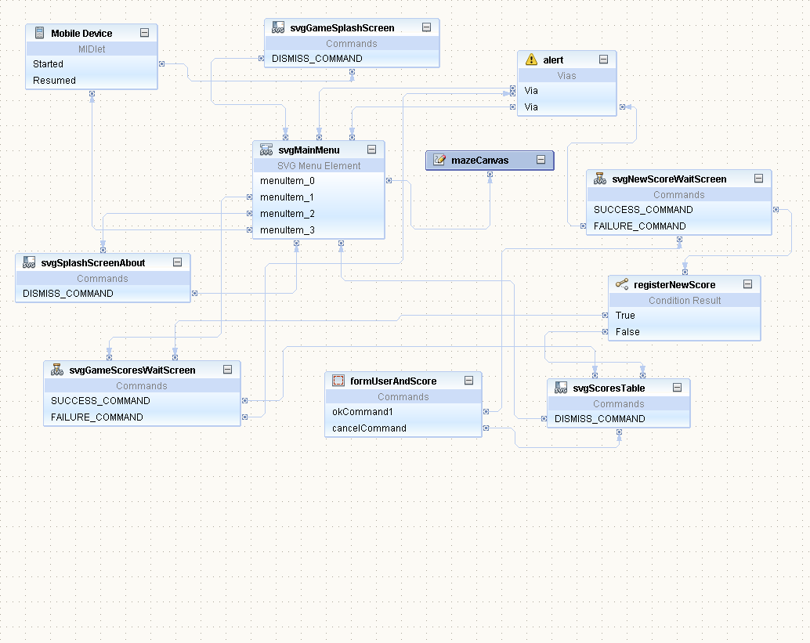
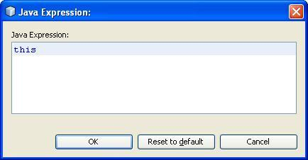

Exercise 1: Creating a MIDP application using visual tools
Introduction:
The goal of this exercise is to let you experience the features of NetBeans Mobility by building and running a simple mobile application and modify the flow of the game application that you will use later to build a mobile game.You will learn following things in this exercise:
- How to create a new Mobile project
- How to build and run the project
- Add Custom Component to the palette.
- How to modify the flow of the Visual game application
Background information:
NetBeans Mobility makes it easy for all programmers to start developing for the Java ME platform quickly, even if you've only had Java SE programming experience. If you are programming mobile devices for the first time, you can just think of Java ME as having a more limited version of the Java SE API, and let NetBeans Mobility Pack take care of the foreign Java ME issues. Though there are more differences than just a smaller API, it's not necessary to know all deeps before producing a working mobile application. To help you get started, here are some terms that are used throughout this document:
- Java ME – Java Platform, Micro Edition is the Java platform meant to run on small devices. Currently, these devices are typically cell phones or PDAs, but Java ME is also used on other embedded systems. A configuration, profile, and optional packages are what compose a Java ME platform.
- CLDC – Connected Limited Device Configuration is a Java ME configuration that is currently most often used on mobile phones. It contains a runtime environment and a core API that are appropriate for the limited processor speed and memory size of mobile devices.
- MIDP – Mobile Information Device Profile is the set of APIs that provide higher level functionality required by mobile applications like displayable components and network communication.
- MIDlet – A class required by all MIDP applications. It acts as the interface between the application and the device on which it is running. Similar to a main class in a Java SE project.
- Emulator – a tool which can run your mobility applications. The emulator usually mimics the behavior of the real phone it is emulating.
- Platform – a Java development kit used to build and run the project in the NetBeans IDE. For Mobile project this usually means emulator, building tools and various JARs that implement Java ME API.
- WTK – Sun Java Wireless Toolkit for CLDC 2.5.2 - a reference implementation of Java ME's CDLC configuration and MIDP profile. Bundled with NetBeans Mobility. Also includes the various building tools.
- JSR172 – J2ME Web Service API. Optional package of J2ME defining API for connecting to a web service.
Steps to Follow:
- Create a Mobile Project.
- Build and run the project
- Add Custom Component to the palette.
- Define the flow of the game application
Step 1: Create a Mobile Project
The first step for any application you develop in NetBeans is to create a project. The project contains all the files that make up the mobile application.
- To create a new project select File > New Project or press New Project toolbar icon.
- A New Project dialog box appears, asking you to choose project category and type. Select Mobile category and MIDP Application project.
- Click Next and the wizard continues by asking to name the project. Name this project Hello.
- Make sure Set as Main Project and Create Hello MIDlet check boxes are marked as selected and click Next.Click Finish to create the project. Your project appears with the HelloMidlet open in the visual designer(Figure-1-1).

Figure-1-1: HelloMidlet in the visual designer
- Select Alert component from the Displayables category in the Palette Window.
- Drag&Drop the Alert screen from palette to the Visual Designer Flow view.
- Component named alert appears (Figure-1-2). By this simple operation you just added a screen component to the design.

Figure-1-2: Alert component added to the flow
- Now change the title of the alert, so it says "Help" - to do so you can simply click on the Title property (in the properties window located in the right-bottom corner of the IDE) and type in the text.
- The next step is to change the text the alert displays to the user - e.g. "This is Help for Hello Midlet". Switch to the Screen designer (using Screen button).
- Select the Alert component in combo box at the top of the document window. It will show the alert component in the Device Screen area of the document.
- Move the mouse over the edit screen, over the < text not specified > area and a blue box should appear, informing you that the text can be edited. Clicking on the blue box. In the editor type the new text and press Enter.
- Switch back to the flow designer and drag Help Command from the palette and drop it on the form component. Help message is added to form component.
- The next task is to connect this help command with our help component (alert) you've just created. Select helpCommand in the form component and drag it to the alert component (you should see a line with arrow while dragging) and drop it on the alert component.
- The components should be now connected together (Figure-1-7 - Alert component is able to automatically return to the component from which it was displayed, thus two lines were actually created - one from form to alert and the second from alert back to form).

Figure-1-3: alert component is linked with Help command on helloForm.Step 2: Build and Running the Project
- Run the application with Run > Run Main Project or simply by clicking on green arrow or hitting F6 key. This saves all files, builds the project (you should see progress of building in output window) and starts the emulator with the HelloMidlet.
- Launch the application, and see the “Hello” form (Figure-1-4), press the Help button. Don't forget to close the emulator when you are done with the application (you can exit the emulator either with close button on the emulator's window or by hitting power-off button in the top-right area, just above the display).

Figure-1-4: Emulator running the HelloMidlet
If the emulator doesn't start up then it might be problem with path to the java. Please, look at the FAQ describing the problem - WTK and default java.
Step 3: Add Custom Component to the palette.
In this step you are going to register a canvas component to the component palette, so it can be used in the visual designer. You can find components provided by MIDP and custom components of the NetBeans Mobility in the palette. The screen components can be used to visualy design a flow of an application. Other components will be used to create user interface of particular screens. You can use your own components to design your application. A custom component has to be added to the palette before it can be used in the visual designer.
- Now you are going to use a project, which contains some functionality already. Open the project by choosing File > Open Project. A filechooser dialog appears.
- Select project MobileGameApp in <lab_root>/exercises/exercise1/ directory and ensure that Open as Main Project is checked.
- The project opens and appears in Projects tab in the IDE. Make sure the project is set as main (project node should be in bold. If not, right-click on the project node and choose Set as Main Project from pop-up menu to make it main).
- Expand the Project node >Source Packages>org.netbeans.j1.game>GameMIDlet.java and double click on the file. It will open the flow design of our game application.(Figure-1-5)

Figure-1-5: GameMIDlet in the flow design
- To add a custom component to the palette select Tools > Palette > MIDP Visual Mobile Designer. This brings up the Palette Manager (Figure-1-6).

Figure-1-6: Palette Manager
- In the dialog, click on Add to Palette button. A wizard for adding new component to the palette appears.
- On the first page, select the project from which you'd like to add the component. In our case, MobileGameApp project should be selected.
- Click Next and select a class to add. By default this dialog shows only components which have sources in the select project, select the class org.netbeans.j1.game.MazeCanvas (Figure-1-7).
- In this dialog you can also specify the palette category to which the component is going to be added. For custom components, please select the Custom Components node.

Figure-1-7: Registering custom component
- Close the palette manager. MazeCanvas component is now available for the visual design (Figure-1-8).

Figure-1-8: MazeCanvas component on the PaletteStep 4: Define the flow of the game application.
In this step you are going to modify the UI of the application that will show a mobile game. When you add/fix the whole game UI and add the logic into the application, the Visual Flow Design of the application should behave in following way. When the user finish to play the game, the application will register his scores and it will require him to enter the userID. It will keep his/her scores and add it into a scores table. This table will display the top10 scores of the best players. If the user decides to improve the score he/she will have the option to update the previous score, in case that it will happened the new score will be reflected in the score table, and return to the main menu, or if he/she decides to exit the application the emulator will be close. For more details about the Visual Flow Design component (and other components) see Javadoc for NetBeans MIDP components and tutorials available on http://www.netbeans.org/kb/trails/mobility.html.
- Go to the Flow Designer of the GameMIDlet. Drag&Drop the MazeCanvas component from palette to the Flow Designer. Component named MazeCanvas should appear in flow design. By this simple operation you just added a screen component to the design. Create flow of the screens in the application. In the Flow design window, click on the menuItem_0 and drag the arrow to the MazeCanvas component. New transition between screens is created.(Figure 10)  Figure-1-10: Final design of the flow of the MazeCanvas application
- Select MazeCanvas component in the Flow Design, go to properties window and click on a custom editor button of the midlet(1.contructor-1.parameter defined property (a small button with three dots). This opens a window with embedded editor, which lets you to write a code to be executed. In this editor, you need to change the default value <null> to this value (Figure-1-2)

Figure-1-11: Java expression- The next task is to write the code, which will start the game thread. To add this functionality you need to click the Source button at top of GameMIDlet document window. The source-code editor should open Now find method svgMainMenuAction - you can either use CTRL+F or double click the method name in Navigator at left bottom corner of the IDE.
If you have problem to find the right place where to write (or paste) the code you can use Window > Tasklist window. Where are listed all TODOs in this hands-on lab.- In the method change the code in following way
public void svgMainMenuAction() { // enter pre-action user code here String __selectedElement = getSvgMainMenu().getMenuElementID(getSvgMainMenu().getSelectedIndex()); if (__selectedElement != null) { if (__selectedElement.equals("menuItem_0")) { switchDisplayable(null, getMazeCanvas()); // write post-action user code here //TODO: [Exercise1][step4] It starts the game thread myGameThread = new GameThread(getMazeCanvas(), this);//[Exercise1] myGameThread.start();//[Exercise1] } else if (__selectedElement.equals("menuItem_1")) {Summary:
In this exercise you learned how to rapidly create mobile application from scratch using visual designer. You utilized standard MIDP components as well as additional components supplied by NetBeans Mobility 6.0.1 external project, which included a custom visual component. You learned how to add a Canvas into the custom components.